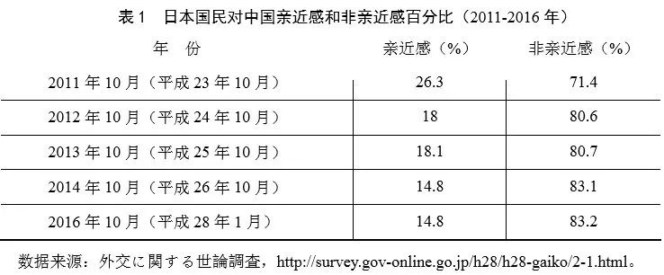
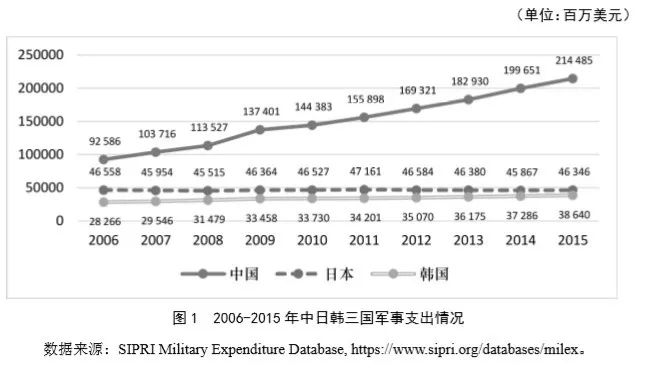
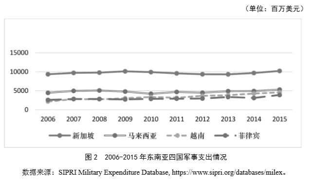
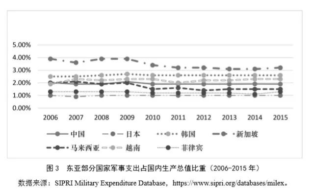

收录于合集
简 介
作者简介：
郭锐，博士，吉林大学行政学院国际政治系教授，博士生导师；陈馨，吉林大学行政学院国际政治2016级硕士研究生。
文章来源： 《国际安全研究》2018年第5期
责任编辑： 苏娟
转载声明： 其他平台直接复制转载本平台文章，请务必清晰标注作者、文章来源期刊和转载来源平台（国政学人）。

【内容提要】伴随着世界格局的更迭与国际形势的变化，安全问题在国家间交往中被关注的程度愈益加深，新的地缘环境和国际背景催生了“泛安全化”倾向。近年来，以地缘热点问题为中心，东亚地缘环境发生了一系列的新变化，南海问题博弈加剧、朝鲜半岛安全威胁增大、域内领土争端难以解决、日本政治军事大国战略提速、台海两岸关系微妙紧张起来、域外国家频繁插手东亚事务等，致使整个东亚地区在传统安全和非传统安全领域呈现“泛安全化”的不良倾向。这种状况在影响东亚地缘格局走势的同时，也给该地区带来了多层次、多领域的地缘安全风险，并触及敏感的军备安全问题。从东亚地区具有代表性国家的军费及防务支出占国内生产总值的比重来看，目前东亚部分国家军备发展状况相对合理。不过，由于域内复杂多样化的不确定因素、域外势力介入的不可测性以及东亚军备安全的整体庞杂和结构复杂的突出状况，致使整个地区的军备安全前景面临着多种可能性。东亚国家应开展“去安全化”的新型地区合作，推动建立地区性的军备安全风险管控机制，构建新型军备发展与军备安全关系，共同增进东亚地区的安全与和平。
【关键词】 东亚安全；泛安全化；军备安全风险；去安全化
东亚地区由于独特的地缘环境条件和地缘政治结构，域内国家在政治制度、发展水平、安全知觉、军事力量、意识形态、宗教信仰、历史文化等多个方面存在差异，国家之间处在多样复杂敏感的关系形态之中，致使一系列的地缘热点问题一再频发且颇为棘手。 由此，本就十分复杂微妙的东亚安全局势，呈现了“泛安全化”的不良倾向。 一方面，东亚地缘环境的此种变化，给整个地区带来了多向度、多领域的地缘安全风险，并触及敏感的军备安全问题；另一方面，对于东亚国家开展“去安全化”的新型地区合作、构建军备领域的地区性风险管控机制和新型军备安全关系，创造了新机遇，提出了新要求，指明了新方向。
一、“泛安全化”倾向与东亚地缘格局走向
伴随着世界格局和国际形势的不断变迁，东亚地区原有的地缘政治结构发生了巨大变化。现阶段东亚地缘环境变化呈现的“泛安全化”倾向，使该地区成为一系列地缘热点问题一再频发的一个敏感地区。 除了朝鲜半岛问题、南海局势变化、台海局势走向、海洋权益争端、大国安全竞争等传统安全领域问题外，诸如网络安全建设、气候环境治理、资源能源利用、民间好感认同、大国战略博弈、历史认识知觉、地区合作架构等一系列新的地缘热点问题，均无例外地被导入了“泛安全化”的思维逻辑及政策框架之中。 这种状况给东亚国家带来了不少麻烦和新的困扰，形成了相当范围和力度的地缘安全冲击波，同时也给域内国家构建安全领域的新型地区合作关系，创造了一定的机遇和可能。
（一）“泛安全化”倾向的理论阐释
冷战结束以来，国际社会发生了巨大变迁，国际关系走势愈发复杂。由此产生了新一轮关于安全理论的研究与争论。 在相继出现的安全理论流派中，以巴里·布赞（BarryBuzan）和奥利·维夫（Ole W **ӕ ver）为代表的哥本哈根学派突显出来，其提出的安全化理论成为冷战后安全问题研究中影响深远且具有代表性的理论之一。**该理论提出，“安全化是一种话语进程，在这个进程中，一个主体间理解在政治共同体内部得以建构起来，这种理解把某事物看作对其指涉对象的一种生存威胁，并由此得以要求为处理该威胁而采取紧急和特别的措施。”可以认为，安全化理论是对传统安全定义的一种突破并具有一定的实践意义，“不仅为应对危机提供了方法论意义上的应急方案，而且还提供了某项安全政策是否与安全相关的标准”。这种相对宽泛化的安全理论研究思路，对理解和阐释“泛安全化”倾向提供了帮助。 所谓“泛安全化”倾向，是指非安全领域的“安全化”过程或非传统安全领域的过度的传统安全化表现。具体来讲， “泛安全化”倾向使决策者和政策执行者在安全领域往往抱有一种强烈的敏感的绝对安全意识，而在非传统安全领域则加重了诸如经济安全、生态安全、信息安全、科技安全、资源安全、公共安全、网络安全等新类型问题的传统安全色彩。由此，不得不遵循安全原则、按照安全理论去理解和解决上述问题，致使这些问题的内涵有所异化、界限模糊不定、牵涉因素众多、影响效应广泛，并对看待和处理已有的安全领域问题造成了新的负面影响。
从权力论的角度来看，“泛安全化”倾向主要是源于对“绝对权力优势”和“相对权力优势”的无止境追求。 国际社会处于无政府状态的理论逻辑，使现实中的国际秩序虽然对国际行为体具有了一定的约束作用，但终究没有形成绝对意义的强制力。在国家大小、强弱、贫富等差异十分明显且缺乏足够有效的强制性机制的国际社会中，主权国家为了确保生存与发展、赢得国际声誉和地位，其表现出对权力的强烈渴望。尤其是伴随着国际局势变化且出现了所谓的“权力转移”状况时，主权国家对权力的欲望愈演愈烈。 激烈的权力争夺、复杂的权力关系相互交织，而预期之中的权力收益则使国际行为体致力于获取某种程度的“权力优势”，从而引发了诸多问题，以至于彼此之间陷入安全困境。 可以说，“泛安全化”倾向是伴随着主权国家对“绝对权力优势”和“相对权力优势”的无止境追求所产生的一种不良现象，致使其国家战略和对外政策难以摆脱“权力旋涡”的作用影响，也就走不出“安全认知”主导下的思维局面。
从利益论的角度来看，“泛安全化”倾向的出现是存量利益和增量利益的分配不均衡产生的结果。 谋取利益是主权国家进行内部发展和对外交往的重要目标及手段之一，这使其滋生了巨大的利益占有欲，致使一些国家难以避免“私利最大化”的盲目行为而不顾及共同利益的存在事实。尤其是多个国家在同一领域里的利益诉求重叠时，彼此之间以自身利益最大化为中心的排他性行为将不可避免。 主权国家为了获取更多更大的利益并维护其“利益安全”将会采取多种手段，随着维护自身“利益安全”的领域扩大及作用泛化，由此导致“泛安全化”的倾向。
从观念论的角度来看，“泛安全化”倾向的出现是国家安全观新旧更替的产物。 传统安全观把国家生存与发展的外部环境界定为“无政府状态”、内在动力是对“权力优势”的无止境追求、重要衡量指标是“获利程度”和“地位优势”，致使军事因素在国家安全观的演变中长期居于主导性地位。 冷战结束后， 非传统安全问题对国家、地区及世界的影响力和威胁性变得越来越大，使人们不得不重新审视国家安全的内涵及维度，由此产生了新安全观。这既突破了军事因素主导下的传统安全范畴，也渗透到更广泛领域并使其“安全性质”有所变化，造成了“泛安全化”的倾向。
（二）“泛安全化”倾向对东亚地缘格局变化的影响
近年来，东亚地区形势发生了诸多变化，其地缘政治环境、地缘经济环境、地缘安全环境、地缘文化环境等呈现一系列的新特点，“泛安全化”倾向日趋明显是其中的重要特点之一。由此，域内的政治关系、经济发展、安全互动、人文交流、对外往来等活动，其首要考虑即是安全因素。也就是说， 东亚国家已经习惯于从安全问题的立场或“安全化”的思维去看待和思考各个领域各个方面的不相关问题，将之异化或同化为“安全问题”即是“泛安全化”倾向。 这导致“泛安全问题”或“类安全问题”在东亚地区始终处于首要地位，并深刻影响到东亚地缘格局走向。
东亚地区位于亚欧大陆东部、太平洋西岸，海岸线绵长，多天然良港，拥有台湾海峡、马六甲海峡等重要的海上通道，地理条件得天独厚，地理位置十分重要，这一点得到了地缘政治学界的普遍肯定。在 哈尔福德·麦金德 （Halford John Mackinder）的“心脏地带说”中，东亚地区位于包围“中心地带”的边缘“内新月形地带”，其历来是海权与陆权相争夺的重要地区。在 尼古拉斯·斯皮克曼 （Nicholas John Spykman）的“边缘地带说”中，边缘地区的作用更为重要，而亚欧大陆的边缘地区则是重中之重，即“谁支配着边缘地区，谁就能控制欧亚大陆，谁支配着欧亚大陆，谁就掌握世界的命运”。 也就是说，边缘地带在国际社会的激烈竞争中处于核心地位，由此，东亚地缘环境变化备受相关各方的高度关注，而东亚地缘格局走向则深受三个方面因素的影响。
首先，国际社会的整体形势。 地区格局走向离不开世界形势的发展与变化，东亚地缘格局的再造与走向是与国际社会的整体形势及其变化息息相关的。近年来，世界各国实力对比变化比较明显，当今国际社会正处于重要的转型时期，并呈现 “总体稳定，局部动荡”的突出特点 ，非传统安全等问题成为诱发世界动荡的主要原因。在这种大背景下，东亚地区安全局势受到了一定影响，并对本地区格局的再造与走向构成了不小冲击。 东亚国家对彼此实力变化的高度敏感，使得域内一些国家难以放弃“冷战思维”和“泛安全化”倾向，传统安全问题的处理解决依然是影响东亚地缘格局走向的关键所在。
其次，区域内外大国的做法。 大国对东亚地缘格局的再造与走向的影响力非常明显，其参与者历来不是单纯地理意义上的几个国家，还包括美国、俄罗斯这样的世界性大国。 中国 是东亚地区事务与地缘热点问题的重要相关方，作为正在迅速崛起的发展中大国，其需要一个稳定和平的周边地缘环境。在这种情况下，中国一直秉承和平发展的理念，在地缘政治、地缘经济、地缘安全、地缘文化等方面，始终坚持和平发展道路。 美国 是当今世界的唯一超级大国，其称霸之心从未泯灭，东亚地区是美国实施全球战略的重要节点。从小布什时期开启美国 “重返亚太” 进程到奥巴马时期美国实施 “亚太再平衡” 战略，再到特朗普政府重提 “印太战略” ，美国对东亚地区事务的介入干涉有增无减。从加强美日、美韩同盟关系到插手南海局势变化，到特朗普政府对《跨太平洋伙伴关系协议》（TPP）的反复无常态度，再到美国加大与台湾地区的接触频率等，美国通过这些明显针对中国的战略围堵布局，试图继续主导东亚地缘格局走向的战略思路比较明确。此外， 俄罗斯、日本 作为东亚地区具有重要影响力的传统意义大国，其对东亚地缘格局的再造与走向从未袖手旁观。 由此，现阶段东亚地区以多个地缘热点问题为中心，在不同领域、不同方位，形成了多个显性的或隐性的“三角关系”或“多角关系”，对东亚地缘格局走向构成了多种影响。
最后，区域内敏感国家的战略。日本 一直以来在谋求政治大国地位，在这种情形下其政治右倾化愈发明显。从钓鱼岛争端、安保法案修订、历史认识不清、推动修改宪法、壮大武装力量、民众态度改变等方面来看， 日本已经成为影响东亚地区局势变化的不稳定因素 。日本旨在争夺地区主导权、与美国联手遏制中国崛起的做法，在东亚地区激起了不小的地缘安全波澜。近年来，日本国民对中国、韩国等周边国家的非亲近感明显增加的新变化，也引起了周边国家的高度关注和格外警惕（参见表1）。 朝鲜 作为“神秘的国度”不断进行核与导弹试验，给东亚地区安全与稳定带来了诸多的不确定影响，朝核问题解决也成为影响东亚地缘格局走向的重要问题之一。 东南亚国家 涉及南海问题、文化认同、种族宗教、大国介入等多方面的敏感问题， 东盟 在多个场合“用一个声音说话”的战略使其成为域内不可忽视的一支力量，其表现出了不会坐视东亚地缘格局变化的明确态度。东盟国家对本地区安全问题的复杂心态及其在其他领域的多元利益诉求，使其认识问题的“泛安全化”心理难以消除，也就无法避免域内外大国对它们的影响干涉，这从南海局势变化、美日印澳联手介入其中可见一斑。

二、“泛安全化”风险与东亚军备发展态势
“泛安全化”倾向的愈发明显及其经济问题政治化、政治问题社会化、社会问题民粹化、民粹问题国家化、国家问题安全化的传导机制与表现形式，对东亚地缘环境变化和东亚地缘格局走向形成了多向度、多层次的深刻影响。 由此，给东亚地区带来了不小的地缘安全风险，致使域内外一些国家在军备发展和防务建设上首先活跃起来并偏执于“单边主义”行动，从而威胁到东亚地区的安全与和平。
（一）“泛安全化”与东亚军备发展的关联
军备发展具有多方面的功能作用。首先，在政治上，军备发展会增强一国在地区范围内的影响力。 硬实力与软实力构成了国家实力系统，而军事实力则是组成国家硬实力的重要条件和物质力量之一。军备发展作为军事领域更加具体化的表现，其一定程度上代表着国家实力的发展与增强，并给国家带来了更大的影响力。 其次，在经济上，武器装备的进出口以及军备建设将会拉动一国国防工业的发展与升级，在形成国防经济体系的同时，也部分增加了国家的经济效益。 武器装备领域是一个高收益的产业，无论是大型武器装备、武器配件还是各类弹药，一旦产生了对这方面的需求，生产国和出口国都会获得极高的经济利润。通过一段时间内的生产与销售，上述国家的生产技术会随着需求和形势的变化而不断创新，由此国防工业实现升级发展。以美国为例，第二次世界大战为美国国防工业发展提供了重要的历史机遇。战争中对武器装备、各类弹药的巨大消耗量，让作为军备出口国的美国获得了巨大的经济收益。通过这次战争，美国的政治影响力显著增加，经济力量大幅度上升，其成为世界一流的军事强国，军备生产也实现了专业化、系列化、标准化，这为其登上世界霸主地位奠定了坚实基础。 再次，在军事上，军备发展会使一国得到一定的军事利益，同时也会增强国家的军事威慑力和安全感。 国际社会的弱肉强食现象，使每个国家尤其是许多相对实力较弱的国家因为国际形势和地区局势的变化而产生一种危机感。由此，加强国家安全能力建设尤其是军备发展，便成为世界各国缓解不安全状态的重要手段之一。军备发展在确保国家生存、促进国家发展、增强国家底气、提高国民士气的同时，也对外界形成了威慑和震慑的作用。 最后，在外交上，军备发展以及武器装备的进出口，将会拉动国家之间的关系发展。 在国家之间的交往行动中，相比于经济、外交、文化等其他方面的关系往来，国家在军事方面的交往更加谨慎。而军备发展以及武器装备的进出口所形成的国家之间的交往形态，则能够集中反映上述国家之间的战略互信程度。通常，一旦形成了军事装备领域的进出口行动，在一定程度上就表明了两国或多国之间的关系得到了推进和发展。
“泛安全化”倾向的出现和增强，使得东亚地区面临着多领域、多层次的地缘安全风险。 在这种大背景下，域内国家为了确保国家安全、缓解“泛安全化”倾向对其造成的各种负面影响，不免会采取一些包括 “单边主义”行动在内的应对策略 。推动军备发展的独特作用，使得东亚国家将应对“泛安全化”倾向的主要措施之一聚焦在该领域之内。由此， 东亚国家形成了在“泛安全化”倾向日趋明显的地缘环境中，不断谋求军备发展推动防务建设的局面，这从历年来东亚地区的军事演习频次和东亚国家的军事支出趋势中可见一斑。
在军事演习频次方面， 由于东亚地区形势复杂微妙，朝核问题、南海问题、钓鱼岛问题、区域主导权竞争问题、民众好感度问题、经济发展问题、环境治理责任分配问题、网络安全问题等地缘热点难点问题众多， 传统安全与非传统安全问题的交错混杂，致使东亚地区历来是军事演习高频次举行的重要地区之一 。具体来看， 目前东亚地区军事演习主要分为两种：一种是美国主导下的年度例行军事演习。 近年来，中国在政治、经济、军事、科技以及区域影响力等多方面的实力不断提升，一定程度上触碰了美国在东亚地区的既得利益，致使美国不断介入东亚地区事务、搅动东亚地区形势，进而在其主导下的各类年度例行联合军事演习的次数不断增多、规模不断扩大、科目持续增加、演练针对性更强、地缘战略影响更大。比如， 美日两国 之间有代号为“利刃”“山樱”“东方之盾”的联合军事演习， 美韩两国 之间有代号为“关键决心”“鹞鹰”“乙支自由卫士”“不屈意志”的联合军事演习，美国与蒙古国之间有代号为“可汗探索”的联合军事演习， 美菲两国 之间有代号为“肩并肩”的联合军事演习，等等。此外，以应对南海局势变化为基本设定， 美国与新加坡、菲律宾、马来西亚、文莱 等东南亚国家之间还有代号为“卡拉特”的双边联合军事演习。 另一种是以“泛安全化”倾向为主要诱因所导致的军事演习。 比如，尽管菲律宾已是亚洲基础设施投资银行（AIIB）成员国，但其对AIIB态度的几多转变值得玩味。由于菲律宾对基础设施建设有着巨大需求且自身能力有限，而其加入AIIB后在得到资金帮助的同时，还可能加大中国对菲律宾及整个成员国经济等方面的影响力，因此菲方态度出现反复暧昧不明。2015年6月，菲律宾军队与日本自卫队在南沙近海海域举行了联合军演，军演后“以国际社会为后盾，菲律宾针对亚投行的态度也变得强硬”。上述两类军事演习在东亚地区“泛安全化”倾向的影响下，与一系列的地缘热点问题交织扯动起来，搅动整个地区的安全局势变化，形成了不小的波及面和对安全局势的影响。
在军事支出方面，由于近年来东亚地区争端、事态有所增多和加剧，东亚国家对军事安全领域的支出更为重视。 从统计数据来看，虽然近年来东亚国家在军事支出上没有出现大幅度的波动变化，但总体上其军事支出仍是有增无减。据 瑞典斯德哥尔摩国际和平研究所（SIPRI） 的数据统计，东北亚地区关键三国——中日韩的军事支出较为稳定（参见图1）。在东南亚，新加坡、越南、菲律宾、马来西亚的军事支出也相对平稳（参见图2）。由于近年来越南、菲律宾与中国在南海问题上争端增多趋紧，无论官方还是民众的情感情绪均十分敏感，因此，上述两个国家的军事支出在2011年以后呈现出较之前更明显的上涨态势。 除了具有代表性的国家之外，东亚地区军费支出在亚洲地区也处于首位。 以2016年为例，该年度亚洲地区军费总支出约4 500亿美元，其中东亚地区军费支出达3 080亿美元，遥遥领先亚洲其他地区。同时，军费支出额相比2015年增长4.3%。


就东亚国家及整个地区军费支出的连年增长原因来看，除了传统安全上的巨大需求之外，“泛安全化”倾向的影响作用不可忽视。第一，网络信息安全与军事信息化、现代化建设。 随着互联网的急速发展，军队在信息记录、处理与分析上越来越多地使用网络与科技设备，而网络技术的种种弊端则使或明或暗的“网络战”一再频发。这使东亚国家进一步加大了在军事网络信息防御与反击建设上的投入支出，以防止泄密与网络攻击等问题发生。 第二，自然资源争夺与军备建设。 东亚地区领土争端虽然属于传统安全领域问题，但深究其争端的原因，却与自然资源的争夺、捕鱼权的归属等非传统安全因素息息相关。这使东亚部分国家采取了以军备建设如升级警戒雷达、建立巡逻舰队、增加针对性装备等为威慑手段的自然资源占有争夺方式，致使其军费支出持续上涨。 第三，打击海上恐怖主义与海军建设。 海洋作为国际社会大宗货物贸易与往来、能源资源运输的重要交通媒介，其一直以来都受到海上恐怖主义的严重威胁，诸如毒品、偷渡、武器等违法交易难以禁绝。东亚地区位于太平洋西岸，面临相当广阔的海域，其面对海上恐怖主义危险的系数较高。东亚部分国家为防止和抵制海上恐怖主义问题，采取了增加军费支出以加强海军建设的应对手段。
可以说，无论是从近年来东亚地区联合军事演习类型还是东亚国家军事支出情况来看，东亚军备发展与本地区“泛安全化”倾向日趋明显之间都存在着相互关联。 可以说，“泛安全化”倾向的出现和加强，推动了东亚军备发展态势，同时，东亚军备发展态势在一定程度上也使整个地区的“泛安全化”倾向更为明显。
（二）东亚军备发展态势及趋向
东亚军备发展受到诸多因素的影响，主要包括地区整体局势、域内大国的态度与战略、地缘热点问题的发展程度、域内国家政治互信水平以及美国“重返亚太”能力等影响因素。 据统计，“全世界共17个拥有核武器或核武化规划的国家，其中7个在亚太地区；共28个有导弹规划的国家，其中16个位于该地区；共16个有化学武器规划和13个有生物武器规划的国家，其中的亚太国家分别为10个和8个”。可见，东亚国家在军备发展方面的强烈欲望，进一步提升了整个地区的军备安全风险水平，致使国家之间的安全竞争态势加剧，东亚地区局势的不确定性有所增加。
从东亚部分国家（参见图3）的军事支出占国内生产总值比重来看，其军事支出比重及趋势在整体上保持着相对平稳态势，其中，中国、日本、韩国的走势平稳明显，新加坡、马来西亚、越南、菲律宾的走势有明显的波动。这表明当前上述国家军事支出占国内生产总值比重较为合理，其没有因为东亚地区的“泛安全化”倾向日趋明显而陷入军备发展恶性竞争的危险局面。但是，这不能表明整个地区军备发展态势也处于稳定状况，目前东亚地区军备发展仍存在军备种类不断增多、军备技术不断升级、军备竞争日趋明显化和常态化、域外国家先进军备输入增加等多方面的问题。 可以说，东亚地区因冷战对峙局面而奠定的军备发展格局非但未在冷战终结后松动解体，反而是愈发地表现出整体庞杂和结构复杂的突出状况，其军事装备的高精尖水平、技术研发质量、输入输出能力等状况令人忧虑。

众所周知，东亚地区局势纷繁复杂，地缘热点问题众多。在东亚地区，影响军备发展的因素很多且相互交织起来，既有国家战略、大国态度、政治互信等域内外国家间因素的影响，又存在着域外大国介入干涉的外部影响因素；既有历史情感、民族心理等方面的主观因素，又有地缘条件、国家实力等方面的客观因素。目前，这些复杂多元因素的相互作用，没有使东亚军备发展偏离正常轨道而陷入安全困境，或是带来明显的战争风险。不过，这些因素使整个地区的军备发展越来越具有明显的竞争性或针对性。 随着东亚国家在军备发展方面的竞争状况加大加深，未来东亚军备安全形势有可能出现三种局面。第一， 竞争形势急剧增加，以至于严重威胁到本地区安全局势。 第二，竞争形势仍然明显且有所加剧，但整个地区安全局势相对稳定。第三， 由于东亚地区安全合作程度有所加深，竞争形势有所缓解。目前来看，东亚国家顺应时代潮流谋求和平与发展的意愿依然强烈，因此，第一种局面的出现几率较小。东亚国家之间历史遗留问题的长期难以妥善解决和域内大国之间竞争地区主导权的局面，使得第三种局面的出现几率也较低。相比之下，中国与美国及其盟友或“保护国”之间的战略竞争局面会持续存在甚至时有激化，但中国不会主动挑起与美国的军备竞赛。伴随着中国综合实力包括军事实力的快速提升，域内外国家与中国发生各领域冲突的成本将会越来越高，这使得彼此之间发生军备竞赛的几率降低。因此， 未来东亚军备安全形势出现第二种局面的几率较大。
三、“去安全化”与管控东亚军备安全风险的中国思路
近年来，东亚地缘环境的新变化引起了多方面问题的“泛安全化”表现，而“泛安全化”倾向的出现和加强则成为影响东亚地缘格局走向的重要因素之一，并给整个地区带来了一系列的地缘安全风险。东亚地区热点问题的叠加相交造成了地区内发展的各种不确定性，但安全与稳定一直是域内国家所追求的战略目标， 因此，推动和促进东亚国家在各领域各层次开展“去安全化”合作十分必要，中国也应为管控东亚军备安全风险采取应有的切实行动。
（一）“去安全化”合作的必要性与可行性
“去安全化”是与“安全化”相伴而生的概念，它“意味着把那些已经‘安全化’的议题挪出安全议程”。如今“泛安全化”倾向已经给东亚地区带来了不少问题和不小麻烦，在这种情况下，为了维护东亚地区的安全与和平，应开启“去安全化”合作的新进程，这会给整个地区带来一系列的实际好处。 从国际大背景来看， “去安全化”有助于东亚地区落实和平与发展的时代主题。两次世界大战的爆发让国际社会深刻认识到战争的巨大危害，惨痛的历史教训让人们意识到和平的弥足珍贵。当前，虽然世界各国为避免战争的发生做出了一定的让步与克制，但是仍存在许多隐患及不确定性因素。对此，如果不加以重视并及时控制，可能就会产生不可弥补的严重后果。
推动“去安全化”合作，能够使东亚国家在安全问题和争端解决上更加理性和克制，从而增进整个地区的和平与发展。 从国家发展来看，推动“去安全化”合作可以为域内国家发展带来稳定的外部环境保障和可预期的实际收益。 为了稳定和提升国家在竞争日趋激烈的国际格局中的有利地位，实现国家发展是不二选择，这离不开国家内外部环境的保障支撑。推动“去安全化”合作可以弱化域内一些国家的外部安全威胁和消除其敏感脆弱的安全心理，为其提供相对稳定的外部环境保障和可以预期的国家发展成果。 从国家对外关系来看，推动“去安全化”合作有助于增进国家间关系的进一步发展。 “泛安全化”倾向的出现和加强，使得原本政治互信程度不高的东亚国家关系变得更加的敏感和复杂，而相互信任又是开展国家间交往的重要因素之一。 推动“去安全化”合作可以在一定程度上纠正东亚国家之间基于“安全认知”逻辑的交往习惯，进而增强域内国家的相互信任程度，可持续地促进彼此之间关系发展。
目前，东亚地区“泛安全化”倾向越来越明显，为避免更严重的情形发生，东亚国家应未雨绸缪，积极开展“去安全化”合作，进一步维护和实现东亚地区的安全与和平，使整个地区和东亚国家享受到“去安全化”合作带来的多方面好处。 其实，在东亚地区有许多推动“去安全化”合作的可行性条件。第一，从时效上来讲， “泛安全化”倾向的出现时间不长。在国际政治中，出现时间越长的问题，其处理起来也相对越难。东亚地区的“泛安全化”倾向是最近几年出现的，维持其进一步突显的各方面条件较为薄弱，一些极端性的不良现象也未显现，这为推动“去安全化”合作提供了有利条件。 第二，从国家本身来讲， 现阶段东亚国家均处于发展的重要时期，其需要稳定和可预期的内外部环境作为基本保障。从这个意义而言，东亚国家有意愿推动“去安全化”合作，以便营造更加宽松良好的地区环境。 第三，从观念上来讲， 东亚国家已经普遍接受了“新安全观”，包括近年来中国提出的以综合安全、共同安全、合作安全和可持续安全为主要原则的“亚洲新安全观”。这为东亚国家推动“去安全化”合作，奠定了必要的观念基础，形成了基本的心理认同。
（二）东亚军备安全风险管控与中国作为
“泛安全化”倾向的出现和加强，造成了东亚地区在军备安全方面的风险性较之于以往有所增加。历史经验表明，缺少合理管控的军备发展，将会带来危害地区安全与和平、增大军备竞赛风险、扰乱地区正常秩序、破坏域内国家关系等诸多方面的严重负面影响。 现阶段，有必要按照“寻求战略谅解、消除军事威慑、构建安全机制、实现外交突破”的基本路径，实现对东亚军备安全风险的有效管控，这需要相关国家的共同努力。一要 承认并正视东亚军备安全风险的存在事实； 二要 树立应对东亚军备安全风险的观念意识； 三要 建立多边合作安全机制，以保障和规范东亚地区军备发展； 四要 敦促相关国家保持理性和克制，减少域外国家对东亚地区军备发展的介入干涉。
东亚国家的共同努力是管控东亚军备安全风险的重要基础，而域内大国的有所作为则是影响实际管控效果的重要因素。 在东亚地区，中国是具有很大话语权和影响力的重要国家之一，作为坚持和平发展道路且负责任的大国， 中国应在管控东亚军备安全风险问题上积极做出表率，由此带动其他国家共同行动起来。
第一，强化自身的实力与能力。 中国综合实力的快速增长是有目共睹的，但是，国家实力并不必然地正向完全地转换为国家能力。中 国应加强国家实力与国家能力的转换建设， 既不放松国家实力增长，确保国家实现可持续发展，又要建立健全国家实力转换为国家能力的顺畅体制机制，切实让改革开放的巨大发展成果转换为中国的国际话语权、国际影响力、国际信誉力和国际领导力。
第二，推动地区合作与共同发展。 中国应加快有序推动“一带一路”建设，完善包括亚洲基础设施投资银行在内一系列的地区性公共产品，实现“加强与亚洲发展中国家的联系，共享发展必需的权利”的重要承诺。积极推动地区经济一体化朝着更深层次更广领域实现新发展，使中国与东盟、韩国的自由贸易区建设发挥应有的示范作用，为地区合作与共同发展注入活力提供动力，引导域内国家将主要精力放在和平发展领域而不是安全竞争甚至是军备竞赛方面。
第三，大力宣传亚洲新安全观，以新理念开创新局面。 2014年5月，习近平主席在“亚洲相互协作和信任措施会议第四次峰会”上发表重要讲话，提出了以共同安全、综合安全、合作安全和可持续安全为主要原则的“亚洲新安全观”。“亚洲新安全观”提出后，由于非常符合当前亚洲尤其是东亚地区的现实状况，因此得到了亚洲各国包括东亚国家的普遍赞誉和高度认同。在此方面，中国应进一步加大宣传力度，积极引导相关国家摒弃“冷战思维”和过时的安全观。 以军备安全风险管控为契机，中国应引导并携手东亚国家，共同开创构建东亚地区新型安全关系的新局面。
第四，坚持和平发展道路，保持战略定力和战略自信。 作为正在崛起的发展中大国，中国的一举一动都被国际社会所高度关注。中国一直以来承诺坚持和平发展道路，并已经在增强国防透明度、担当国际维和责任等方面赢得了国际声誉。在东亚军备安全风险管控方面，中国应积极做出表率，贡献中国智慧，提供中国方案，将其作为中国承诺坚持和平发展道路、实现地区和平与发展的重要一环。
第五，积极推进地区安全机制建设。 受制于各种因素，时至今日，东亚地区也没有建立行之有效的安全机制。通常，军备安全风险的形成和扩散，在很大程度上是源于国家对自身安全感的缺失。 为了缓解这一问题，中国应带头加强与相关国家的安全互动与交流，增进彼此之间的战略互信程度。同时，共同努力处理和解决地缘热点问题尤其是地区安全热点问题。 比如，继续推进重启朝核问题六方会谈等，从而降低问题领域和整个地区的军备安全风险水平。
（三）地缘热点问题处理的军备控制思路
针对东亚地区热点问题众多且长期难以得到妥善解决的客观事实，应转换思路，多轨并进多措并举，对其实施一定程度的军备控制干预十分必要。
第一，推动尽早建立多边合作安全机制。 东亚地区作为一个整体，地缘热点问题的处理离不开域内每个国家的共同努力。现阶段东亚地区缺乏行之有效且有一定约束力的多边合作安全机制，致使域内国家军备发展容易陷入无节制的危险境地，进而危害到东亚地区的安全与和平。应推动尽早建立多边合作安全机制，以制度化举措和思路，推进及实现东亚军备发展的透明化和节制化。
第二，提升东亚国家之间沟通互动水平。**东亚地区各类热点问题长时间得不到彻底妥善解决，在很大程度上是源于域内国家之间的沟通互动缺乏。这造成了东亚国家之间互不信任的尴尬情况，也让域内一些国家路径依赖般地以“单边主义”行动通过强化军备发展能力来增强自身的安全感，不仅效果差强人意，还引起了不必要的针对性的军备安全竞争。应加强东亚国家之间的沟通互动能力，必要时可以推动签署双边或多边的军备控制或军备安全等方面的协议。
第三，推动军事演习的正常化而非针对化。 东亚地区军事演习的次数很多，许多军事演习的“威胁”意味要大于其“威慑”意义，要避免使有预防性的、针对性的军事演习成为地区安全和军备发展方面的威胁及隐患。而且，频繁举行军事演习容易产生军备炫耀和攀比情况，进而引发不必要的军备竞赛风险。
*注释及参考文献详见原文
声明
此文由国政学人微信公众平台编辑，欢迎转发分享，转载请务必标注来源。